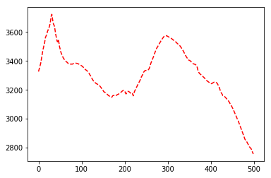
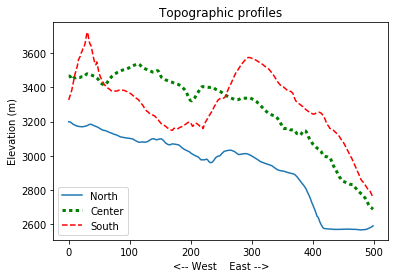
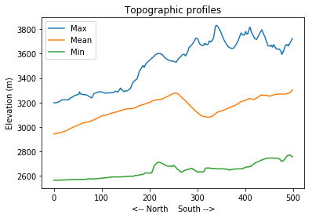
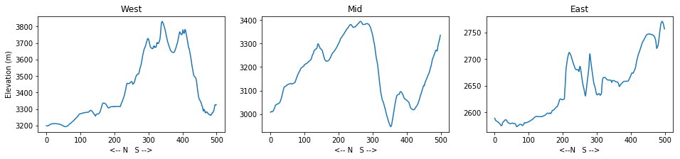
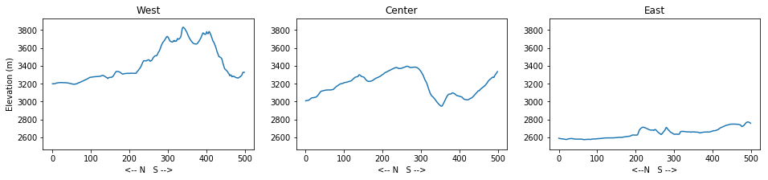
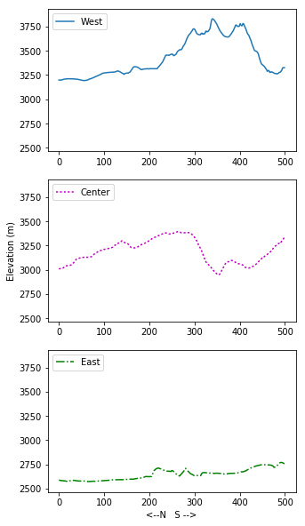

Programming with Python
Operating on arrays
Learning Objectives
- Perform operations on data arrays
- Use numpy functions and methods to calculate array statistics
- Create and customize simple graphs
In the previous lesson, we discussed how to import elevation data into Numpy arrays and how access and visualize that data.
If you are working in a new Jupyter Notebook, you’ll need to import the Numpy library and use it to load the data file:
import numpy
topo = numpy.loadtxt('data/topo.asc')We can perform basic mathematical operations on the individual values of a Numpy array to create new arrays:
topo_in_feet = topo * 3.2808
print 'Elevation in meters:', topo[0,0]
print 'Elevation in feet:', topo_in_feet[0,0]Elevation in meters: 3198.8391
Elevation in feet: 10494.7513193Arrays of the same size can be used together in arithmatic operations:
double_topo = topo + topo
print 'Double topo:', double_topo[0,0], 'meters'Double topo: 6397.6782 metersWe can also perform statistical operations on arrays:
print 'Mean elevation:', numpy.mean(topo), 'meters'
print 'Highest elevation:', numpy.max(topo), 'meters'
print 'Lowest elevation:', numpy.min(topo), 'meters' Mean elevation: 3153.62166407 meters
Highest elevation: 3831.2617 meters
Lowest elevation: 2565.0293 metersThe commands numpy.mean(), numpy.mean(), and numpy.min() call functions of the library numpy that act on the numpy array topo. A subset of numpy functions have an equivalent method - a function belonging to the numpy array. You might find examples of code using either of them:
print 'Mean elevation:', topo.mean(), 'meters'
print 'Highest elevation:', topo.max(), 'meters'
print 'Lowest elevation:', topo.min(), 'meters' Mean elevation: 3153.62166407 meters
Highest elevation: 3831.2617 meters
Lowest elevation: 2565.0293 metersWe can use numpy functions or methods on slices of an array:
half_len = int(len(topo) / 2)
print 'Highest elevation of NW quarter:', topo[:half_len,
:half_len].max(), 'meters'
print 'Highest elevation of SE quarter:', topo[half_len:,
half_len:].max(), 'meters' Highest elevation of NW quarter: 3600.709 meters
Highest elevation of SE quarter: 3575.3262 metersFunctions and methods can also be used along individual axes (rows or columns) of an array. If we want to see how the mean elevation changes with longitude (E-W), we can use the method along axis=0:
print topo.mean(axis=0) # this is the same as numpy.mean(topo, axis=0)[ 3428.2054708 3427.6972338 3427.2261988 3426.584768 3426.0234734
3425.8775458 3425.8402916 3425.8877396 3426.0181264 3426.367201
...
2673.2222786 2670.2175292 2667.2640282 2664.4045236 2661.4727784
2658.2491352 2654.994714 2651.9884342 2649.4527134 2647.065285 ]To see how the mean elevation changes with latitude (N-S), we can use axis=1:
print numpy.mean(topo, axis=1) # this is the same as topo.mean(axis=1)[ 2942.8326116 2943.959394 2945.045799 2945.9719808 2946.8093426
2947.596404 2948.420486 2949.274708 2949.997857 2950.5324138
...
3274.9299236 3276.043744 3277.5482738 3279.666109 3282.5904884
3285.8577394 3289.345506 3293.4776206 3298.0340262 3302.6172956]Stacking arrays
Arrays can be concatenated and stacked on top of one another using Numpy’s vstack and hstack functions (ex. numpy.hstack([array1, array2])).
- Given the array
A, create an arrayBthat is the same height and twice the width ofA.
A = numpy.array([[1,2,3],
[4,5,6],
[7,8,9]])Solution
B = numpy.hstack([A,A])
print A.shape, B.shape(3, 3) (3, 6)- Given the array
A, create an arrayCthat is the twice the height and the same width ofA.
Solution
C = numpy.vstack([A,A])
print A.shape, C.shape(3, 3) (6, 3)Slopes
The gradient of the surface is an important parameter in many landscape evolution models. The function np.diff() takes a Numpy array and returns the difference between adjacent elements along a specified axis. By default, this function acts along rows.
- Use
np.diff()to calculate the elevation gradient in x and y (Hint: remember that the resolution of the elevation dataset is 2 meters).
Solution
grid_resolution = 2 # meters
dzdx = np.diff(topo) / grid_resolution
dzdy = np.diff(topo, axis=0) / grid_resolution- If the shape of an array is (60, 40) (60 rows and 40 columns), what would the shape of the array produced by the function
np.diff()and why?
Solution
The default output of np.diff() for a (60, 40) array would be size (60, 39)
The function np.diff() will output an array that is one cell shorter in the axis along which the difference is calculated.
- What are the highest and lowest values of slope in the array
topo?
Hint: Use np.abs() to get the absolute values of entries in an array. You can get the maximum of two values with np.max([value1, value2]).
Solution
abs_dzdx = np.abs(dzdx)
abs_dzdy = np.abs(dzdy)
print 'Max slope:', np.max([np.max(abs_dzdx), np.max(abs_dzdy)])
print 'Min slope:', np.min([np.min(abs_dzdx), np.min(abs_dzdy)])Max slope: 26.09635
Min slope: 0.0Plotting slopes (Advanced)
Make figures showing the two arrays of the absolute magnitude of surface gradient using the matplotlib.pyplot function imshow. Remember to import the correct libraries and use the iPython magic function! (Hint: look at the previous lesson for an example).
- Change the colormap with the argument
cmap. Look at the available colormaps here: http://matplotlib.org/users/colormaps.html - Add a colorbar with the function
matplotlib.pyplot.colorbar(). - Set the color range with the arguments
vminandvmax. Use the range 0 to 5.
Solution
import matplotlib.pyplot
%matplotlib inline
matplotlib.pyplot.imshow(abs_dzdx, vmin=0, vmax=5, cmap='inferno')
matplotlib.pyplot.colorbar()matplotlib.pyplot.imshow(abs_dzdy, vmin=0, vmax=5, cmap='inferno')
matplotlib.pyplot.colorbar()Plotting, take 2
It’s hard to get a sense of how the topography changes across the landscape from big tables of numbers. A simpler way to display this information is with line plots.
We are again going to use the matplotlib package for data visualization. If you are using the same Notebook that you used for the previous lesson, the matplotlib.pyplot library is still available. As a review, though, we are going to write every step that’s needed to load and plot the data.
We use the function plot to create a basic line plot of elevation across the array:
import numpy as np
import matplotlib.pyplot as plt
%matplotlib inline
topo = np.loadtxt('data/topo.asc')
plt.plot(topo[0,:]) # the first rowplt.plot(topo[-1,:], 'r--') # the last row
It’s difficult to compare profiles on separate plots. Let’s plot three separate profiles in the same figues.
In a Python script, all plots will be stored in the memory buffer for one figure until the function plt.show() is called. The function plt.show() empties that buffer and creates one figure with the output of all plotting functions.
The function plt.savefig() can be used to save the figure to a file. You need to save the figure before calling plt.show()!
You can add the argument label to plt.plot() to set the text that will appear in the legend.
import numpy as np
import matplotlib.pyplot as plt
%matplotlib inline
topo = np.loadtxt('data/topo.asc')
plt.plot(topo[0,:], label='North')
plt.plot(topo[len(topo)/2,:], 'g:', linewidth=3, label='Center')
plt.plot(topo[-1,:], 'r--', label='South')
plt.title('Topographic profiles')
plt.ylabel('Elevation (m)')
plt.xlabel('<-- West East -->')
plt.legend(loc = 'lower left')
plt.savefig('topo_profiles.png', dpi = 300)
plt.show() 
Changes with latitude
- Create one figure showing how the maximum (
np.max()), minimum (np.min()), and mean (np.mean()) elevation changes with latitude (North - South). Label the axes and include a title for the plot (Hint: use axis=1). Create a legend.
Solution
plt.plot(np.max(topo, axis=1), label='Max')
plt.plot(np.mean(topo, axis=1), label='Mean')
plt.plot(np.min(topo, axis=1), label='Min')
plt.title('Topographic profiles')
plt.ylabel('Elevation (m)')
plt.xlabel('<-- North South -->')
plt.legend(loc = 'upper left')
plt.show() 
Subplots
The script below uses subplots to create a figure of elevation profiles at the western edge, the center and the eastern edge of the region. Subplots can be a little tricky because they require the axes to be defined before plotting. Type (don’t copy-paste!) the code below to get a sense for how it works.
This script uses a number of new commands:
- The function
plt.figure()creates a space into which we will place the three plots. - The argument
figsizetells Python how big to make this space. - Each subplot is placed into the figure using the
subplotcommand. The subplot command takes 3 parameters: the total number of rows of subplots in the figure, the total number of columns of subplots in the figure, and the final parameters identifies the position of the subplot in the grid. - The axes of the subplots are assigned to variable names (here, ax1, ax2, ax3, ax4).
- Once a subplot is created, its axes can be labeled using the
set_xlabel()andset_ylabel()methods.
import numpy as np
import matplotlib.pyplot as plt
%matplotlib inline
topo = np.loadtxt('data/topo.asc')
fig = plt.figure(figsize=(16.0, 3.0))
ax1 = fig.add_subplot(1,3,1)
ax2 = fig.add_subplot(1,3,2)
ax3 = fig.add_subplot(1,3,3)
ax1.plot(topo[:,0])
ax1.set_ylabel('Elevation (m)')
ax1.set_xlabel('<-- N S -->')
ax1.set_title('West')
ax2.plot(topo[:,len(topo)/2])
ax2.set_xlabel('<-- N S -->')
ax2.set_title('Mid')
ax3.plot(topo[:,-1])
ax3.set_xlabel('<--N S -->')
ax3.set_title('East')
plt.show() Solution

Customize the subplots
The y axes of the three subplots have different ranges. This makes it hard to compare the elevation profiles. Use the method
set_ylim(min_val, max_val)on each of each subplot axes to set the y range.Refactor (modify, improve) your subplot script to automatically set a more appropriate range for the y axis instead of setting the minimum and maximum values by hand
Hint: you can use the numpy functions np.min() and np.max()) to do this.
Solution
import numpy as np
import matplotlib.pyplot as plt
%matplotlib inline
topo = np.loadtxt('data/topo.asc')
fig = plt.figure(figsize=(16.0, 3.0))
ax1 = fig.add_subplot(1,3,1)
ax2 = fig.add_subplot(1,3,2)
ax3 = fig.add_subplot(1,3,3)
max_elev = np.max(topo) + 100 # adds some padding around the profiles
min_elev = np.min(topo) - 100
ax1.plot(topo[:,0])
ax1.set_ylim(min_elev, max_elev)
ax1.set_ylabel('Elevation (m)')
ax1.set_xlabel('<-- N S -->')
ax1.set_title('West')
ax2.plot(topo[:,len(topo)/2])
ax2.set_ylim(min_elev, max_elev)
ax2.set_xlabel('<-- N S -->')
ax2.set_title('Center')
ax3.plot(topo[:,-1])
ax3.set_ylim(min_elev, max_elev)
ax3.set_xlabel('<--N S -->')
ax3.set_title('East')
plt.show() 
Re-arrange subplots
Modify the subplot script to display the three plots on top of one another instead of side by side.
Change the figure size, titles and axis labels to fit the new layout.
Use different line style for each of the three plots and set their label attributes. Create a legend for each of the axes (ex.
ax3.legend()).
Solution
import numpy as np
import matplotlib.pyplot as plt
%matplotlib inline
topo = np.loadtxt('data/topo.asc')
fig = plt.figure(figsize=(5.0, 10.0))
ax1 = fig.add_subplot(3,1,1)
ax2 = fig.add_subplot(3,1,2)
ax3 = fig.add_subplot(3,1,3)
max_elev = np.max(topo) + 100 # adds some padding around the profiles
min_elev = np.min(topo) - 100
ax1.plot(topo[:,0], label='West')
ax1.set_ylim(min_elev, max_elev)
ax1.legend(loc = 'upper left')
ax2.plot(topo[:,len(topo)/2], 'm:',label='Center')
ax2.set_ylim(min_elev, max_elev)
ax2.set_ylabel('Elevation (m)')
ax2.legend(loc = 'upper left')
ax3.plot(topo[:,-1], 'g-.', label='East')
ax3.set_ylim(min_elev, max_elev)
ax3.set_xlabel('<--N S -->')
ax3.legend(loc = 'upper left')
plt.show() 
Displaying quadrants
Make a 2x2 grid of subplots that use imshow to display each quarter of the topo array. Make sure that the four quarters are in the correct positions. Don’t worry about adding axis labels or a colorbar.
You can set the color range for imshow with the arguments vmin and vmax:
plt.imshow(topo, vmin = min_value, vmax = max_value)
Solution
import numpy as np
import matplotlib.pyplot as plt
%matplotlib inline
topo = np.loadtxt('data/topo.asc')
fig = plt.figure(figsize=(10.0, 10.0))
min_elev = topo.min()
max_elev = topo.max()
ax1 = fig.add_subplot(2,2,1)
ax2 = fig.add_subplot(2,2,2)
ax3 = fig.add_subplot(2,2,3)
ax4 = fig.add_subplot(2,2,4)
ax1.imshow(topo[:len(topo)/2, :len(topo)/2], vmin=min_elev, vmax=max_elev)
ax2.imshow(topo[:len(topo)/2, len(topo)/2:], vmin=min_elev, vmax=max_elev)
ax3.imshow(topo[len(topo)/2:, :len(topo)/2], vmin=min_elev, vmax=max_elev)
ax4.imshow(topo[len(topo)/2:, len(topo)/2:], vmin=min_elev, vmax=max_elev)
plt.show()